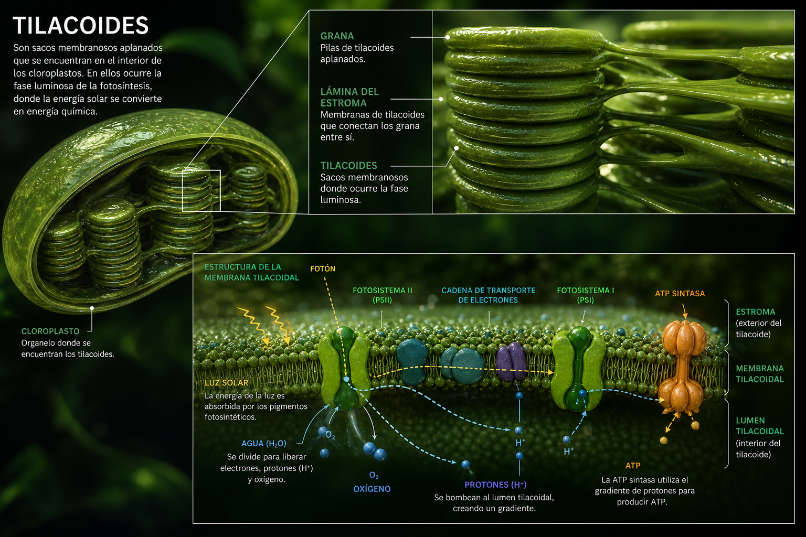
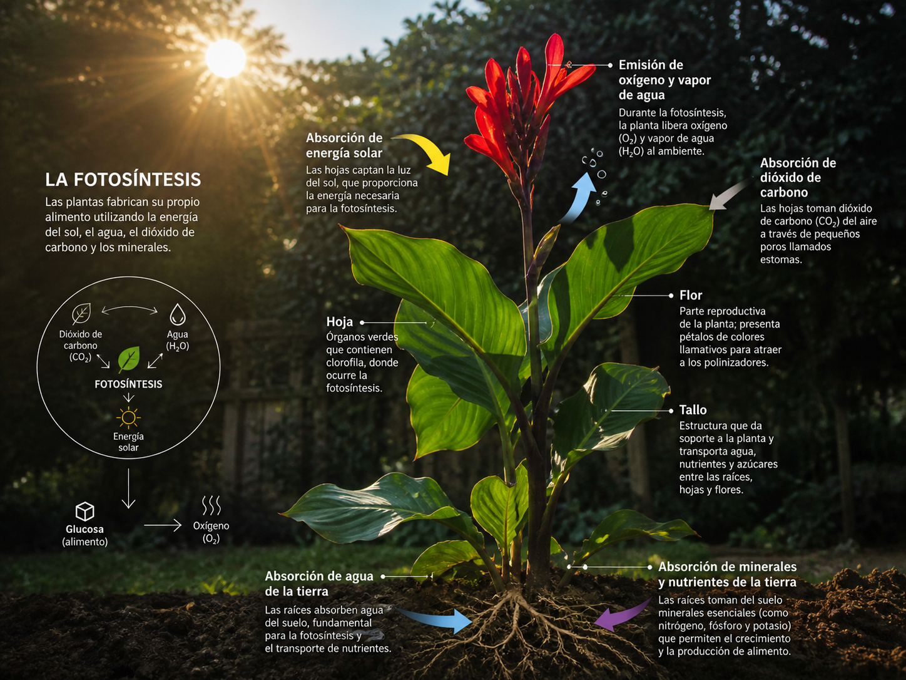

¿Por qué las plantas son verdes?
El color verde de las hojas no es casualidad. Se debe a un pigmento llamado clorofila, una molécula que se encuentra dentro de los cloroplastos, pequeñas organelas presentes en las células vegetales. La clorofila absorbe luz roja y azul del espectro, pero refleja la luz verde. Por eso vemos las hojas de ese color.
La mitad del oxígeno que respiramos no viene de los bosques terrestres sino del fitoplancton marino. Estas algas microscópicas que flotan en los océanos producen entre el 50% y el 80% del oxígeno del planeta.
La clorofila no solo da color: es la molécula que captura la energía de la luz solar y la convierte en energía química. Sin clorofila, la fotosíntesis no sería posible. Existen varios tipos (clorofila a, b, c y d), pero la más abundante en las plantas es la clorofila a.
La ecuación
La fotosíntesis se puede resumir en una ecuación química que muestra qué entra y qué sale del proceso. Es una de las ecuaciones más importantes de la Biología porque explica cómo la energía solar se transforma en alimento para casi toda la vida en la Tierra.
Dióxido de carbono: las plantas lo absorben del aire a través de los estomas, unos poros microscópicos en las hojas.
Agua: la absorben del suelo por las raíces y viaja por el tallo hasta las hojas a través del xilema.
Energía lumínica: proviene del sol. Es capturada por la clorofila y transformada en energía química.
Glucosa: el producto principal. Es un azúcar que la planta usa como fuente de energía y como ladrillo para construir otras moléculas.
Oxígeno: se libera como "desecho". Es el oxígeno que respiramos todos los seres vivos aeróbicos.
¿Cómo funciona?
La fotosíntesis ocurre en los cloroplastos, unas organelas que contienen clorofila y que están presentes en las células de las hojas y los tallos verdes. Dentro del cloroplasto hay unas estructuras llamadas tilacoides, apiladas como monedas formando los grana. Es en la membrana de los tilacoides donde la luz es capturada.

Estructura del cloroplasto: tilacoides apilados en grana (donde ocurre la fase luminosa) y estroma (donde ocurre el ciclo de Calvin).

Esquema completo de la fotosíntesis: fase luminosa en los tilacoides (captura de luz, producción de ATP y NADPH, liberación de O₂) y ciclo de Calvin en el estroma (fijación de CO₂, producción de glucosa).
El proceso tiene dos fases principales:
Fase luminosa
Ocurre en los tilacoides y necesita luz. La clorofila captura la energía lumínica y la usa para romper moléculas de agua (fotólisis), liberando O₂. Se produce ATP y NADPH, moléculas cargadas de energía.
Fase oscura (Ciclo de Calvin)
Ocurre en el estroma del cloroplasto y no necesita luz directamente (aunque sí los productos de la fase luminosa). Usa el CO₂, el ATP y el NADPH para fabricar glucosa.
El agua sube por las raíces y el xilema, la luz solar y el CO₂ entran a la hoja, y el resultado es la liberación de O₂ y la formación de azúcares, resumidos en la ecuación global de la fotosíntesis.
Autótrofos vs Heterótrofos
La vida en la Tierra se organiza alrededor de una distinción fundamental: cómo obtienen los organismos su alimento. Las plantas son autótrofas: fabrican su propio alimento a partir de sustancias inorgánicas (CO₂, H₂O) y luz solar. Los animales somos heterótrofos: no podemos fabricar nuestro alimento y debemos consumir a otros seres vivos.
Las plantas ocupan el primer eslabón de la cadena alimentaria: son productores. Todo el resto de los seres vivos depende, directa o indirectamente, de la materia orgánica que ellas fabrican. Sin fotosíntesis no habría oxígeno en la atmósfera ni alimento para los animales. Las plantas literalmente sostienen la vida en la Tierra.
Respiración celular
Un error común es pensar que las plantas solo hacen fotosíntesis. La verdad es que las plantas también respiran. La respiración celular es el proceso por el cual las mitocondrias (presentes tanto en células animales como vegetales) usan oxígeno para "quemar" glucosa y obtener energía (ATP).
Notá que la ecuación de la respiración es exactamente la inversa de la fotosíntesis. La fotosíntesis consume CO₂ y produce O₂ y glucosa. La respiración consume O₂ y glucosa y produce CO₂.
Durante el día, la fotosíntesis produce mucho más oxígeno del que la planta consume en su respiración. Por eso decimos que las plantas "purifican el aire". De noche, al no haber luz, la fotosíntesis se detiene y la planta solo respira, consumiendo O₂ y liberando CO₂. Por esta razón no es recomendable dormir con muchas plantas en una habitación cerrada.
Preguntas para pensar
1. Si las plantas fabrican su propio alimento, ¿por qué necesitamos ponerles fertilizante? ¿Qué obtienen del suelo que no obtienen del aire?
2. La ecuación de la fotosíntesis muestra que se necesitan 6 moléculas de CO₂ y 6 de H₂O. ¿De dónde sale el oxígeno que se libera: del CO₂ o del H₂O? Investigá el concepto de fotólisis del agua.
3. ¿Qué pasaría con la atmósfera terrestre si todas las plantas del planeta dejaran de hacer fotosíntesis? ¿Cuánto tiempo podrían sobrevivir los animales?